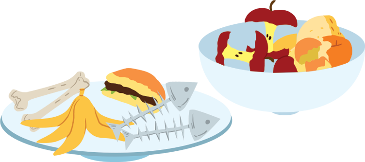
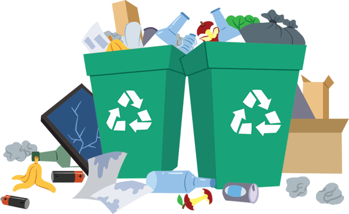
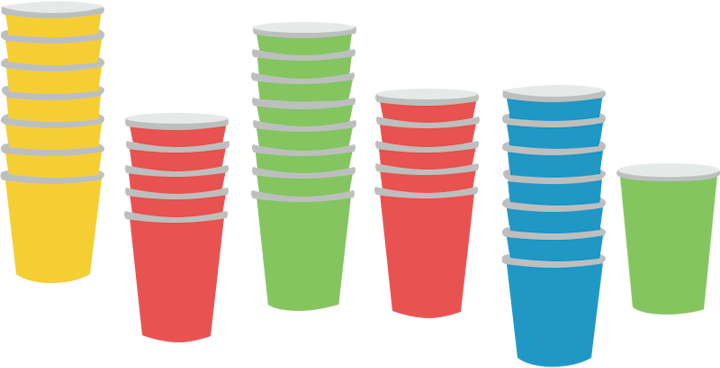
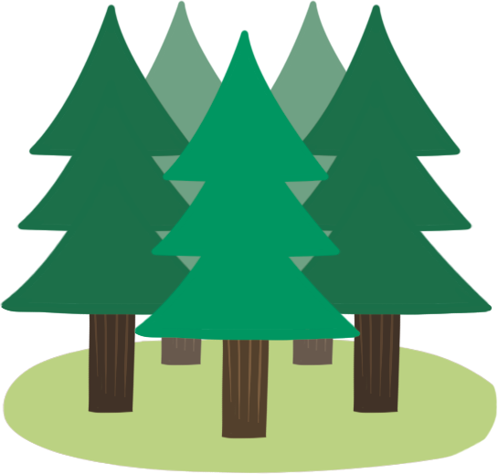
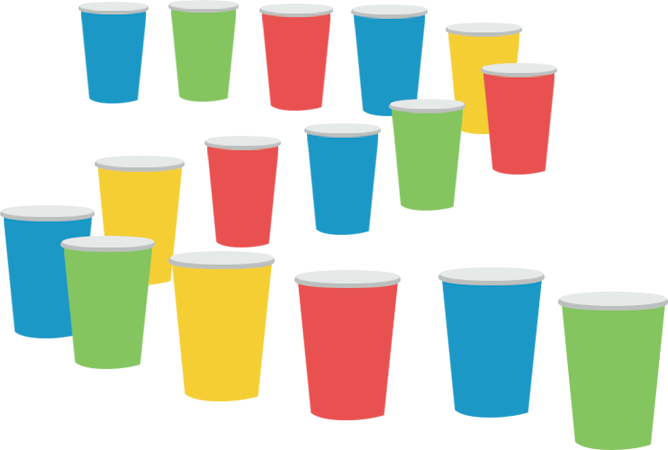
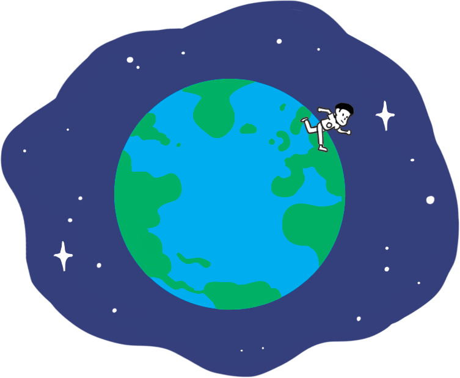

- 물음 1
- 물음 2
- 물음 +
- 물음 3
- 물음 4
-
우리나라에서 하루 동안 버려지는 음식물 쓰레기의 양을 읽어 보세요.
우리나라에서 하루 동안
버려지는 음식물 쓰레기의 양14477 t아프리카코끼리 약 2412마리
의 무게와 비슷해요.만 사천사백칠십칠 톤입니다. -
우리나라에서 1년 동안 버려지는 생활 쓰레기의 양을 읽어 보세요.
우리나라에서 1년 동안
버려지는 생활 쓰레기의 양20452775 t여객기 약 68175대의
무게와 비슷해요.이천사십오만 이천칠백칠십오 톤입니다. -
1 t이 어느 정도 무게인지 떠올리며 방금 읽은 두 수의 의미를 생각하여 이야기해 보세요.
-
예
1000 kg이 1 t이었습니다.
-
예
하루에 버려지는 음식물 쓰레기의 양이 많은 것 같습니다.
-
예
생활 쓰레기가 1년 동안 20452775톤이나 나옵니다.
-
예
-
우리나라에서 1년 동안 사용되는 일회용 종이컵의 개수를 읽어 보세요.
우리나라에서 1년 동안 사용
되는 일회용 종이컵의 개수29400000000개약 300만 그루의 나무를 베어
만든 것과 같아요.이백구십사억 개입니다. -
1년 동안 나온 종이컵 쓰레기를 한 줄로 세워서 길이를 재어 보았더니 무려 191만 6250 km가 나왔습니다. 이 길이는 얼마나 긴 길이인가요?
1년 동안 나온 종이컵 쓰레기를
한 줄로 세워서 잰 길이1916250 km지구를 약 48바퀴나
돌 수 있는 거리예요.[출처: 환경부, 2018]-
예
상상이 되지 않는 길이입니다.
-
예